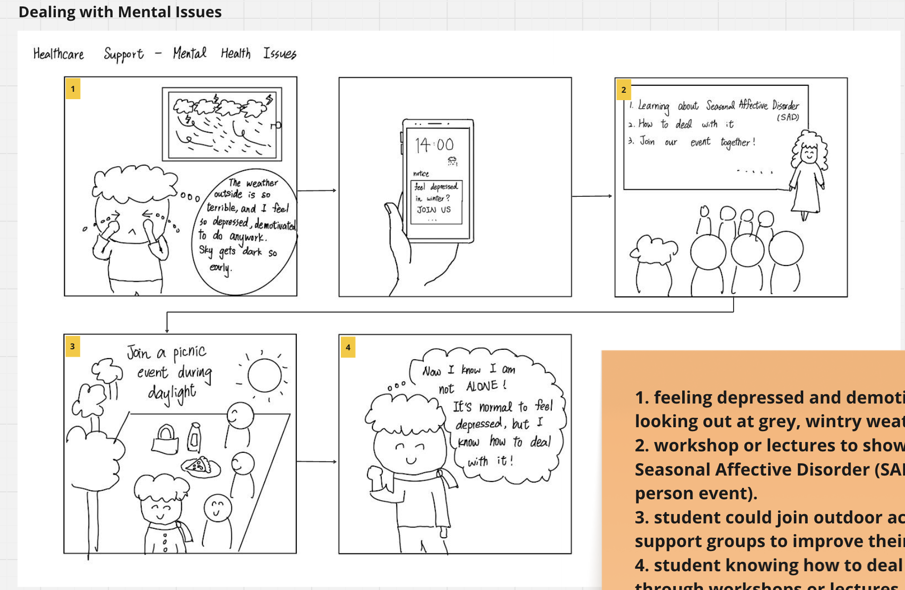
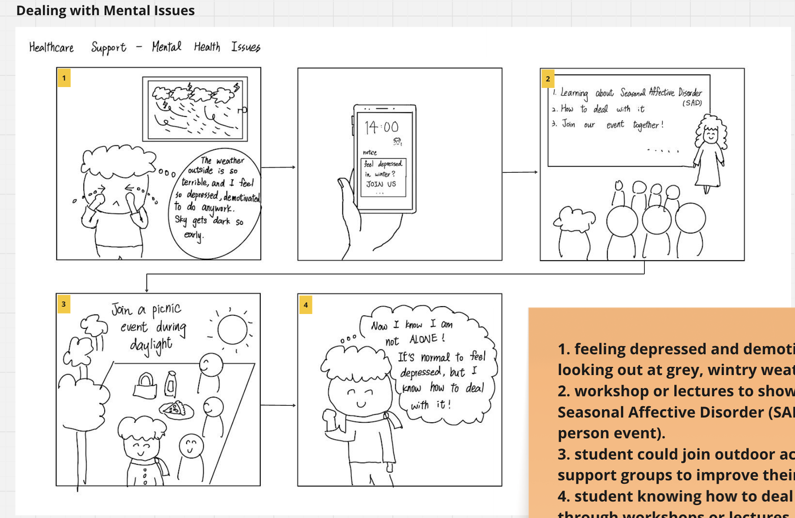

HCI UX Case Study: International Student Hub
10 week Human Computer Interaction coursework at King’s College London End to end research and design of a digital hub to help new international students adapt to London life
Focus mental health support flow and peer connection experience


 
